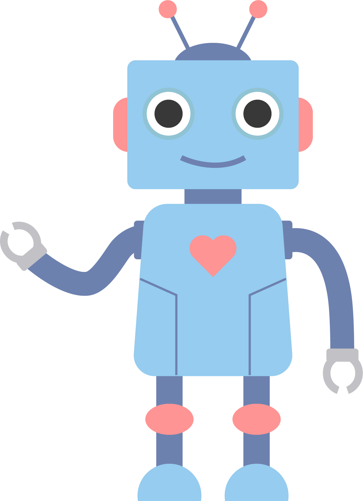
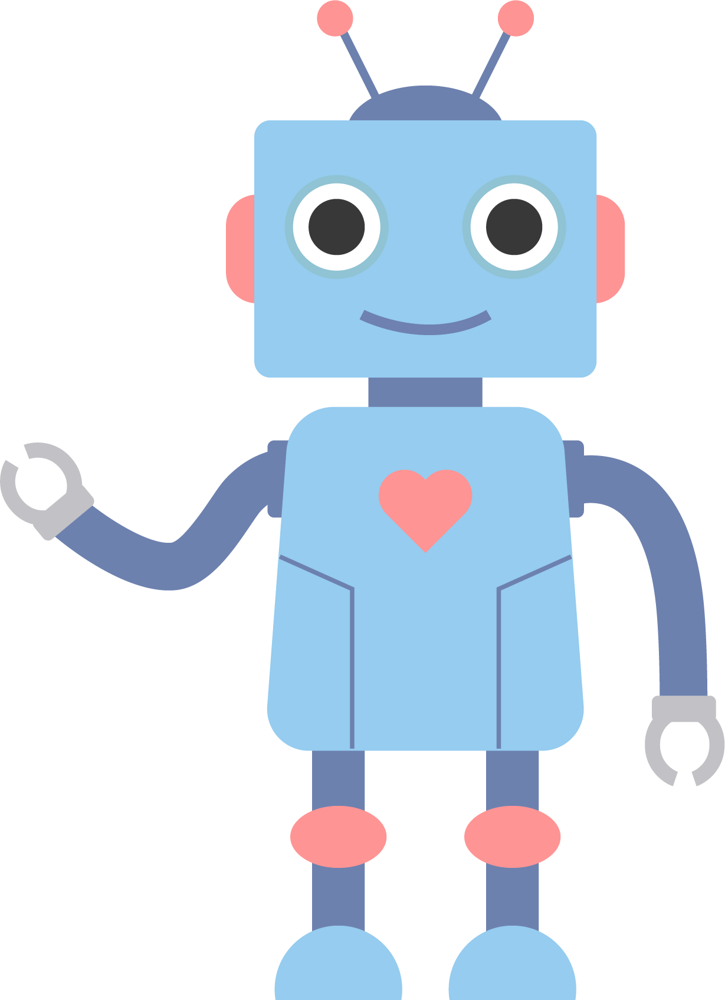

Android robot is a kind of anthropomorphic robot. The robot is similar to humans in appearance and behaviour and can help autistic and anxious patients with rehabilitation activities. According to the description of the author Kumazaki et al. (2018) and others, he mentioned a female robot whose appearance, height and weight are similar to the formation of real people. The robot mainly uses the system to help patients with ASD and anxiety participate in practical dialogue tasks (for example, Job interviews, conversations, social skills interventions).


 
